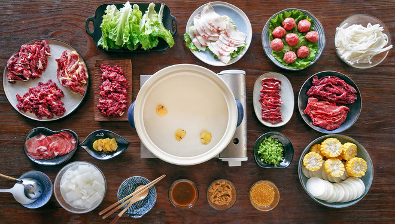
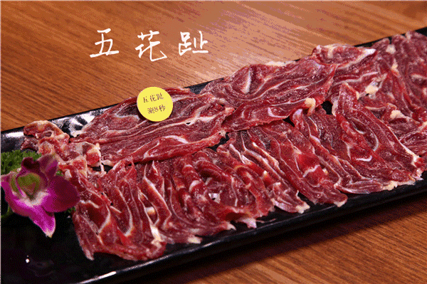
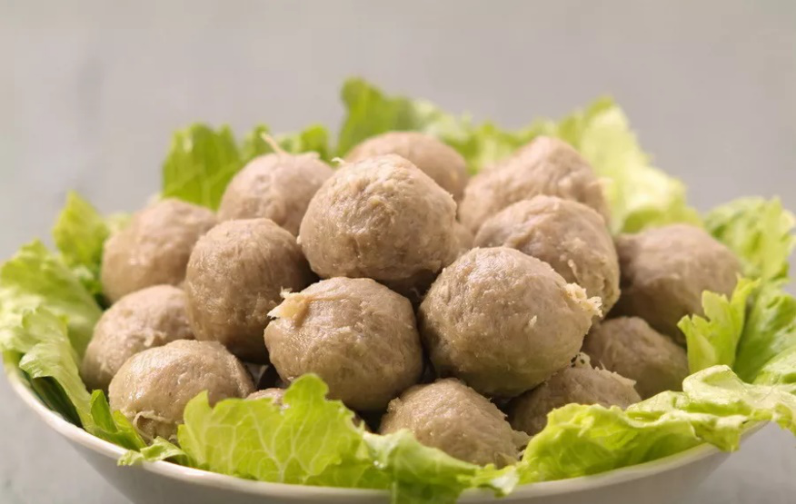
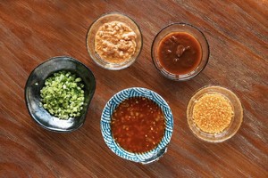
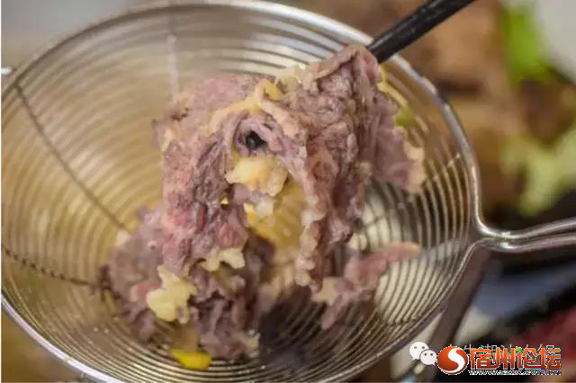

你最忘不了的牛肉火锅
关于冬天的理想，大约就是窗外飘雪，屋内暖锅沸腾。” ——《日食记 · 潮汕牛肉火锅》
说到潮汕，最让潮汕人念念不忘的也只有那香气扑鼻的牛肉火锅了!
潮汕的牛肉火锅最不注重汤底了，简单到仅需纯净水+姜片就已经足够，牛肉火锅最注重的便是牛肉的品质，择选优质的牛肉，简单冲洗干净、切片，便是最优质的食材。
牛肉按从瘦到肥的顺序将五花趾、匙柄、脖仁、吊龙 、肥胼、 胸口朥，不同的部位自然口感是各异的，五花趾香脆可口，匙柄十分筋道，脖仁爽口润滑，吊龙 、肥胼、胸口朥则肥而不腻。准备时只需将汤底煮沸， 牛肉的入锅讲究从瘦到肥的顺序，小火涮肉， 再撒上一层芹菜沫、蒜蓉，趁热呡上一口，从喉咙到胃都清爽通畅，味觉才能循序渐进。后涮时蔬菌菇，海鲜小食，最后点上小牛秘制的主食，可以说是人生的一大享受了。



涮牛肉讲究：快！准！稳！闻香观色，锅起，汤温开，下肉，三起三涮，秒过即捞。
较瘦的部位蘸豆酱，较肥的部位蘸沙茶酱，爽脆的部位则用辣酱 。
等涮完肉，锅底也变成了味道浓郁的牛肉汤，下一点粿条，烫几片蔬菜，盛到碗中，再掺一点点沙茶酱，又可以饱餐一顿了！
潮汕的牛肉火锅不像四川
火锅、北京火锅般火辣，它以其味道香醇、口感浓厚夺得人们的芳心，给吃客留下不一般的印象，成为了潮汕特
有的家乡味道。